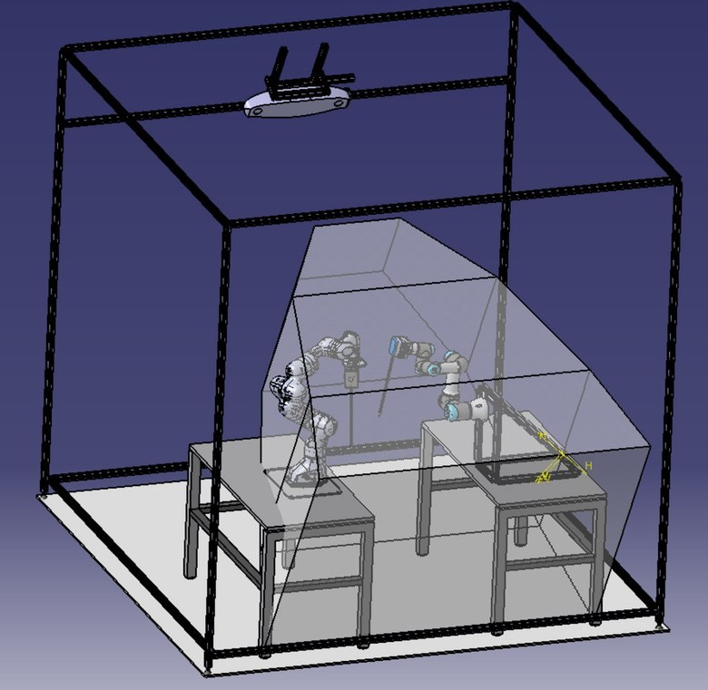

← All projects

Surgical Robot for Autonomous Suturing
OzU Robotics Lab | Mechanical design
TÜBİTAK 1001 research project

What?
- A surgical robot with two cobots, UR3 and Franka Panda. I designed the end-effector flanges for the Franka Panda arms and the structure for the 3D vision sensors.
How?
- Modeled robots and sensors in CATIA V5.
- Adapted the Da Vinci EndoWrist as end-effector.
- Built tables from welded rigid profiles to reduce vibration.
Results
- Ongoing at the OzU Robotics Laboratory: “Development of Surgical Robot Assistants for Autonomous Suturing with Skill Transfer from Surgeon to Robot”, funded by TÜBİTAK 1001.